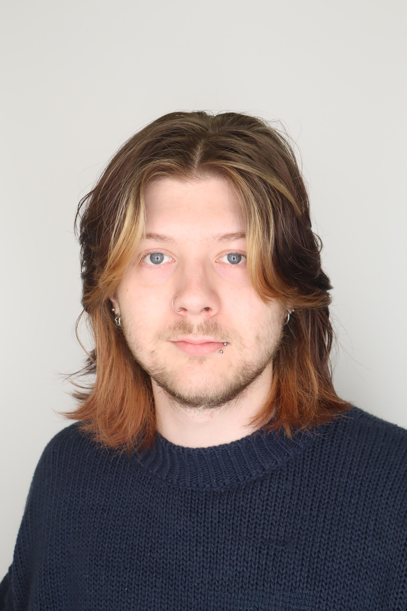

About Me

Hi! My name is Hunter Tortorella. I am an aspiring Concept Artist and Illustrator from Connecticut.
I have always loved the craft of creating and iterating upon others ideas, hence my love for Concept Art. Currently, I work freelance while being a student at University of Connecticut for Digital Media and Design (concentration in Game Design/Game Development).
Elevator Pitch
Hi, I’m Hunter Tortorella, an indie game developer that specializes in Unity and 3D Art design with a focus on building narrative-emotionally rich gaming experiences. I have experience developing custom mechanics like climbing systems with IK hand placement, dynamic camera switching using Cinema Machine, dialogue and UI managers, and state-based NPC behavior.
I’ve worked through the full 3D pipeline as a one-man-team — from prototyping gameplay features and building animation rigs, to building and implementing optimized 3D assets.
I’m currently developing several projects, including a climbing horror survival game with a modular IK hand and feet system that responds to the environment. I’m passionate about building video games that support emotional storytelling, and I’m looking to apply my technical skills in teams that value both game engineering and 3D/2D design.
Skills & Interests
- Unity
- Unreal Engine
- 3D Modeling & Sculpting
- 2D Pixel Art
- Narrative Design
- 3D Animation
- Blender
- 3d Coat Textura
- Sound Design
- Interactive Storytelling
- Adobe Suite
- Maya
- Procreate